I am a PhD student at Mila Québec & University of Montréal since Fall 2024, working with Professors Pablo Samuel Castro and Glen Berseth. I also obtained my MSc there, and my BSc in Data Science and Engineering at Universitat Politècnica de Catalunya (UPC) in Barcelona, Spain.
From Barcelona, Spain
Currently in Montréal, Canada
Research
I am interested in post-training large language models into generally capable autonomous agents. My background is in classical reinforcement learning, and I work on getting these agents to plan, act, and improve in sequential decision-making. I'm especially interested in RL, synthetic data generation, and evals.
Experience
- Research Intern @ Vmax AI2026
- Research Intern @ Ubisoft LaForge2023
- Junior Data Scientist @ HP Inc2021 – 2022
- Research Assistant @ UPC2021
- Basketball Coach @ Sagrada Familia Claror
Education
- PhD @ Mila / UdeM2024 – Present
- Research MSc @ Mila / UdeM2022 – 2024
- BSc, Data Science & Engineering @ UPC2017 – 2021
News
Publications
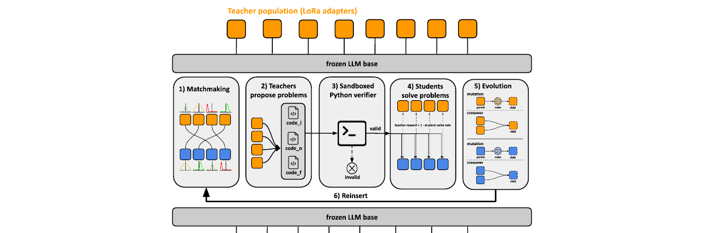
Preprint · 2026
Abstract
We introduce PopuLoRA, a population-based asymmetric self-play framework for reinforcement learning with verifiable rewards (RLVR) post-training of LLMs. Teachers and students are specialised LoRA adapters on a shared frozen base: teachers propose problems, matched students solve them under a programmatic verifier, and cross-evaluation between sub-populations replaces the self-calibration that limits single-agent self-play. A family of LoRA weight-space evolution operators (mutations and crossovers that produce same-rank population members in seconds) serves as the replacement step of a population-based training loop at 7B scale. Where a single agent self-calibrates to generating easy problems it can reliably solve, the population enters a co-evolutionary arms race: teachers produce increasingly complex problems, student solve rates oscillate, and problem-space coverage keeps expanding throughout training. The population mean outperforms a compute-matched single-agent baseline across three code and seven math benchmarks, and even its weakest member beats the baseline on aggregate.
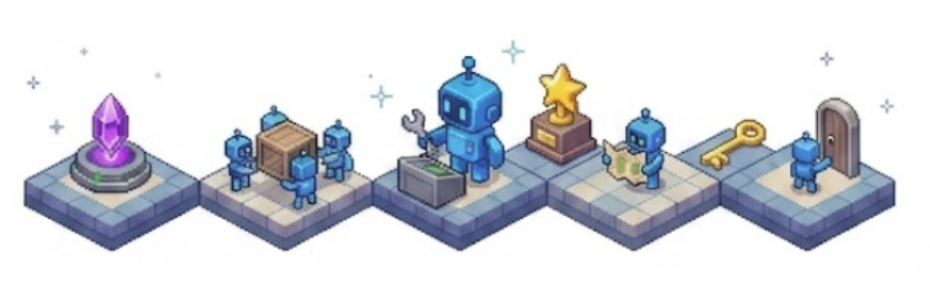
Preprint · 2026
Abstract
AI agent research spans a wide spectrum, from RL agents that learn from scratch to foundation-model agents that leverage pre-trained knowledge, yet no unified benchmark enables fair comparison across these approaches. We present Agentick, a benchmark for sequential decision-making agents designed to evaluate RL, LLM, VLM, hybrid, and human agents on common ground. It provides 37 procedurally generated tasks across six capability categories, four difficulty levels, and five observation modalities through a single Gymnasium-compatible interface, and ships with a coding API, oracle reference policies, pre-built SFT datasets, a composable agent harness, and a live leaderboard. An evaluation spanning 27 configurations and over 90,000 episodes reveals that no single approach dominates, providing the empirical infrastructure to drive progress toward general autonomous agents, both as an evaluation framework and as a training ground for RL post-training of foundation models.
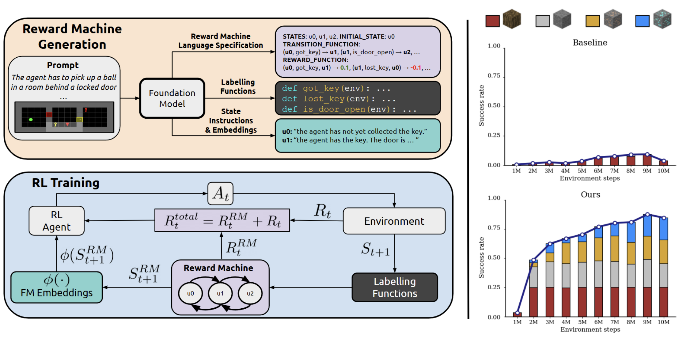
ICLR 2026
Abstract
We present ARM-FM, a framework for automated, compositional reward design in reinforcement learning using foundation models to automatically generate reward machines (formal automata for specifying objectives) directly from natural language. By pairing high-level reasoning of foundation models with reward machines' structured formalism, ARM-FM enables robust, generalizable RL agents and demonstrates effectiveness, including zero-shot generalization, on diverse, challenging environments.
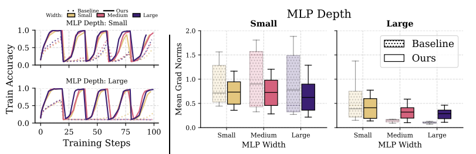
NeurIPS 2025 Spotlight
Abstract
This work investigates why scaling deep reinforcement learning networks often degrades performance, identifying the interplay of non-stationarity and gradient pathologies from suboptimal architectures as key causes. Through empirical analysis, we propose simple, easily integrated interventions that stabilize gradient flow, enabling robust performance across varying depths and widths. Our approach is compatible with standard algorithms and achieves strong results across diverse agents and environments, offering a practical path toward scaling deep RL effectively.
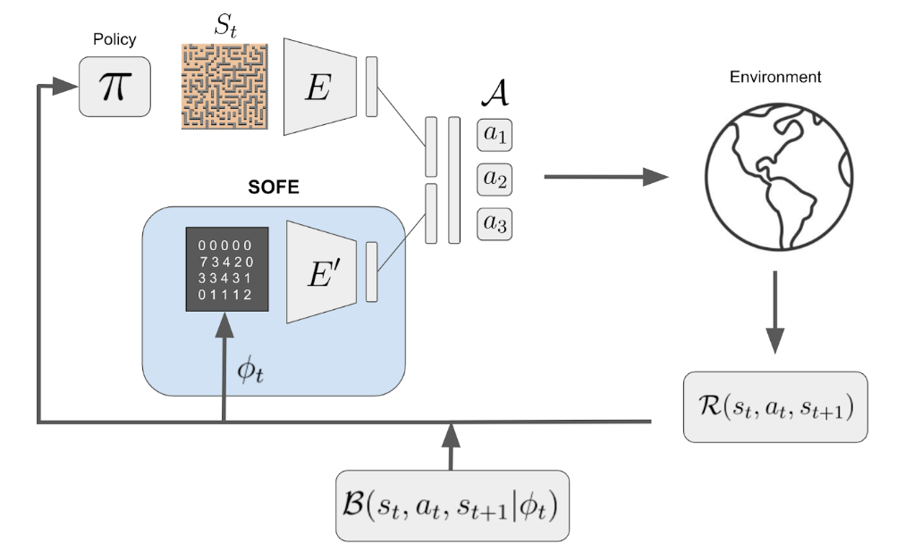
ICLR 2024
Abstract
We identify that any intrinsic reward function derived from count-based methods is non-stationary and hence induces a difficult objective to optimize for the agent. The key contribution of our work lies in transforming the original non-stationary rewards into stationary rewards through an augmented state representation. We introduce the Stationary Objectives For Exploration (SOFE) framework. Our experiments show that SOFE improves the agents' performance in challenging exploration problems, including sparse-reward tasks, pixel-based observations, 3D navigation, and procedurally generated environments.
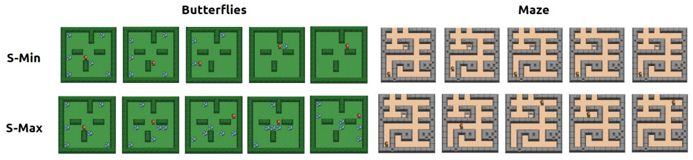
RLC 2024 · IMOL @ NeurIPS 2023 Oral
Abstract
Both surprise-minimizing and surprise-maximizing (curiosity) objectives for unsupervised reinforcement learning (RL) have been shown to be effective in different environments, depending on the environment's level of natural entropy. However, neither method can perform well across all entropy regimes. In an effort to find a single surprise-based method that will encourage emergent behaviors in any environment, we propose an agent that can adapt its objective depending on the entropy conditions it faces, by framing the choice as a multi-armed bandit problem. We devise a novel intrinsic feedback signal for the bandit which captures the ability of the agent to control the entropy in its environment.
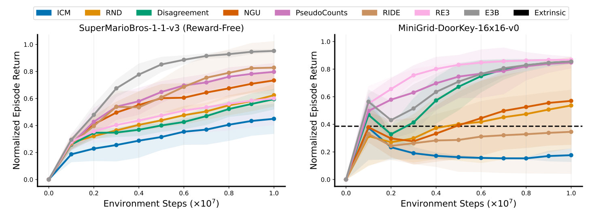
TMLR 2024
Abstract
Extrinsic rewards can effectively guide reinforcement learning (RL) agents in specific tasks. However, extrinsic rewards frequently fall short in complex environments due to the significant human effort needed for their design and annotation. This limitation underscores the necessity for intrinsic rewards, which offer auxiliary and dense signals and can enable agents to learn in an unsupervised manner. We introduce RLeXplore, a unified, highly modularized, and plug-and-play framework offering reliable implementations of eight state-of-the-art intrinsic reward algorithms.
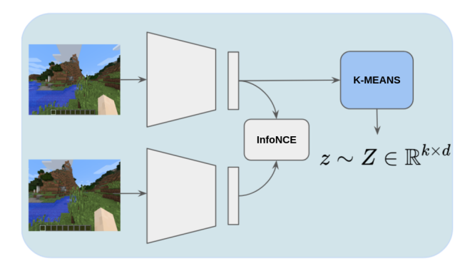
URL Workshop @ ICML 2021
Abstract
Pre-training Reinforcement Learning agents in a task-agnostic manner has shown promising results. However, previous works still struggle in learning and discovering meaningful skills in high-dimensional state-spaces, such as pixel-spaces. We approach the problem by leveraging unsupervised skill discovery and self-supervised learning of state representations.
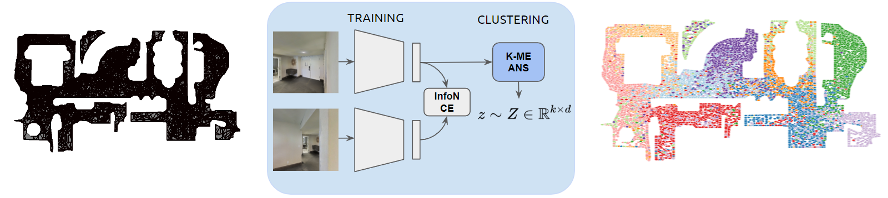
Embodied AI Workshop @ CVPR 2021
Abstract
We tackle embodied visual navigation in a task-agnostic set-up by putting the focus on the unsupervised discovery of skills that provide a good coverage of states. Our approach intersects with empowerment: we address the reward-free skill discovery and learning tasks to discover what can be done in an environment and how.
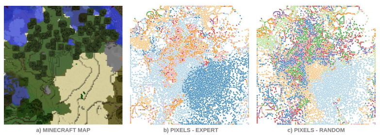
Embodied AI Workshop @ CVPR 2021
Abstract
Defining a reward function in Reinforcement Learning (RL) is not always possible or very costly. For this reason, there is a great interest in training agents in a task-agnostic manner making use of intrinsic motivations and unsupervised techniques. We hypothesize that RL agents will also benefit from unsupervised pre-trainings with no extrinsic rewards, analogously to how humans mostly learn, especially in the early stages of life.
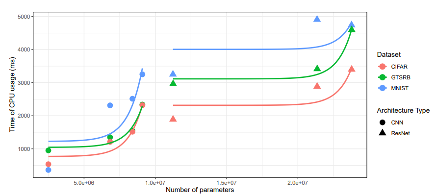
Empirical Software Engineering (EMSE) 2022
Abstract
The construction, evolution and usage of complex artificial intelligence (AI) models demand expensive computational resources. While currently available high-performance computing environments support well this complexity, the deployment of AI models in mobile devices, which is an increasing trend, is challenging. Our objective is to systematically assess the trade-off between accuracy and complexity when deploying complex AI models to mobile devices, which have an implicit resource limitation.
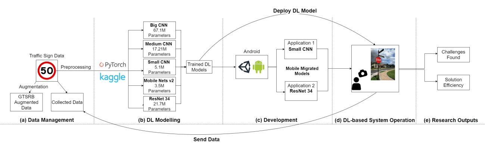
AI Engineering Workshop @ ICSE 2021
Abstract
When building Deep Learning (DL) models, data scientists and software engineers manage the trade-off between their accuracy, or any other suitable success criteria, and their complexity. In an environment with high computational power, a common practice is making the models go deeper by designing more sophisticated architectures. However, in the context of mobile devices, which possess less computational power, keeping complexity under control is a must.
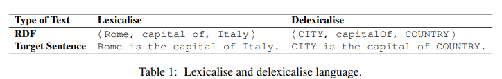
WebNLG Workshop @ EMNLP 2020
Abstract
This work establishes key guidelines on how, which and when Machine Translation (MT) techniques are worth applying to RDF-to-Text task. Not only do we apply and compare the most prominent MT architecture, the Transformer, but we also analyze state-of-the-art techniques such as Byte Pair Encoding or Back Translation to demonstrate an improvement in generalization.
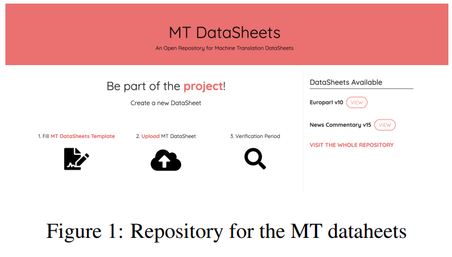
Abstract
In this report we are taking the standardized model proposed by Gebru et al. (2018) for documenting the popular machine translation datasets of the EuroParl and News-Commentary. Within this documentation process, we have adapted the original datasheet to the particular case of data consumers within the Machine Translation area. We are also proposing a repository for collecting the adapted datasheets in this research area.
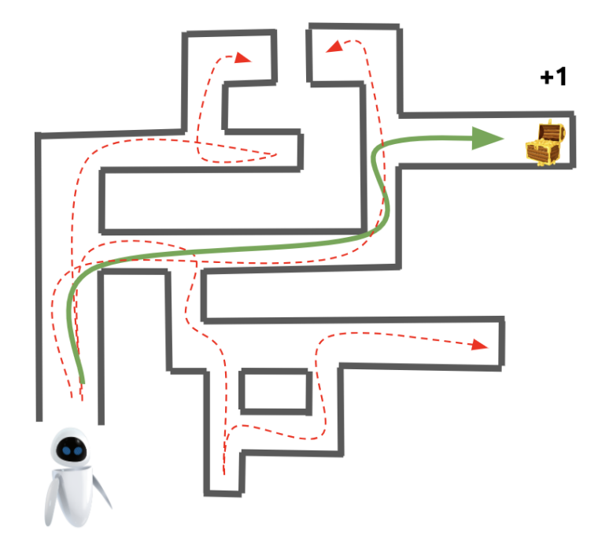
MSc Thesis
Abstract
This thesis advances intrinsic motivation in reinforcement learning by tackling the instability of non-stationary rewards with SOFE, an approach that stabilizes exploration through augmented states; introducing S-Adapt, an adaptive entropy-based mechanism enabling emergent behaviors without extrinsic rewards; and developing RLeXplore, a standardized framework for consistent implementation of intrinsic reward methods.
BSc Thesis
Abstract
This work focuses on the self-acquirement of the fundamental task-agnostic knowledge available within an environment. The aim is to discover and learn baseline representations and behaviors that can later be useful for solving embodied visual navigation downstream tasks.
Projects
Agentick
A universal benchmark for evaluating sequential decision-making agents (RL, LLM, VLM, hybrid, and human) across 37 procedurally generated tasks, five observation modalities, oracle datasets, and a live leaderboard.
Stable Deep RL at Scale
Official code for our NeurIPS 2025 Spotlight, "Stable Gradients for Stable Learning at Scale in Deep RL": simple interventions that stabilize gradient flow so deep RL networks scale across many environments.
xgenius
A command-line tool for managing remote jobs and containerized experiments across multiple clusters. Simplifies Docker/Singularity builds and SLURM job submission.
Blokus RL Environment
An implementation of the Blokus board game environment using the Gymnasium framework, designed for training AI agents.
Centralized Control for Multi-Agent RL
Centralized control for multi-agent RL in a complex Real-Time-Strategy game. Final project for COMP579: Reinforcement Learning at McGill (Prof. Doina Precup, Winter 2023).
RLLTE
Long-Term Evolution Project of Reinforcement Learning.
Wave Defense RL Environment
A Reinforcement Learning environment for a custom Wave Defense game based on OpenAI Gym, with baseline Deep RL models.
Ball Sort RL Environment
A Reinforcement Learning environment for the Ball Sort Color Puzzle Game based on OpenAI Gym, with baseline Deep RL models.